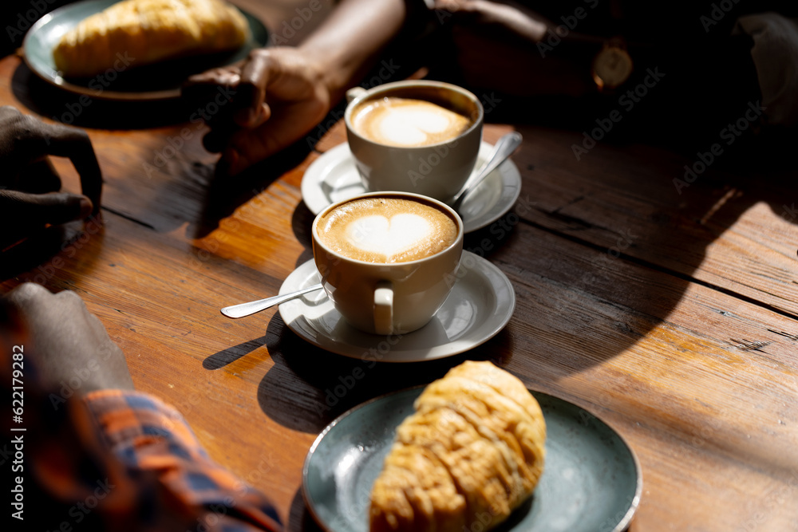

Na Memórias de Vó, nossa missão é resgatar os momentos mais doces da vida, trazendo à tona as lembranças mais queridas por meio de sabores especiais. Somos uma cafeteria dedicada à panificação e confeitaria, onde cada produto é feito com carinho, seguindo receitas tradicionais que aquecem o coração.
Inspirados nas memórias afetivas de avós e familiares, oferecemos uma experiência única, repleta de aromas e sabores que revivem momentos inesquecíveis. Desde o pão fresquinho do café da manhã até o bolo caseiro que acompanha as boas conversas, nosso objetivo é que nossos produtos toquem cada um de nossos clientes, fazendo com que se sintam em casa.
Nosso compromisso é atrair um público de todas as idades, de todas as faixas etárias, proporcionando um ambiente acolhedor e familiar. A Memórias de Vó é o lugar onde o passado se encontra com o presente, e onde cada pedaço de nossa confeitaria é uma viagem no tempo.
Venha reviver suas melhores memórias com a gente!
